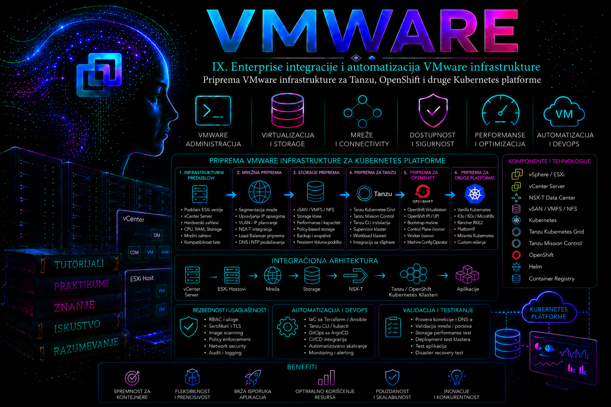

VMware

Sažetak
Priprema VMware infrastrukture za Tanzu, OpenShift i druge Kubernetes platforme predstavlja mnogo više od kreiranja nekoliko virtuelnih mašina. Potrebno je unapred proceniti kapacitete vSphere okruženja, raspoloživost ESXi hostova, mrežnu topologiju, datastore resurse, DNS i NTP servise, servisne naloge, bezbednosne zone i pravila visoke dostupnosti. Produkcioni Kubernetes klaster mora biti raspoređen tako da kvar pojedinačnog hosta, mrežnog segmenta ili skladišnog sistema ne ugrozi control plane, worker čvorove ili poslovne aplikacije. Zbog toga VMware infrastruktura mora biti standardizovana, kapacitivno planirana i pripremljena za dinamičan način rada kontejnerskih platformi.
Posebnu pažnju zahtevaju mreža i persistent storage. Potrebno je jasno odvojiti opsege namenjene čvorovima, podovima, servisima, API krajnjim tačkama i ingress saobraćaju, obezbediti stabilne DNS zapise, load balancer mehanizme i dokumentovane komunikacione tokove. Istovremeno, Kubernetes mora imati mogućnost dinamičkog korišćenja skladišnih resursa kroz odgovarajuće StorageClass objekte i podržane storage integracije. Planiranje mora obuhvatiti performanse, redundansu, način pristupa podacima, rezervne kopije i oporavak, jer visoka dostupnost klastera sama po sebi ne predstavlja zaštitu poslovnih podataka.
Konačni cilj nije samo uspešna instalacija Tanzu, OpenShift ili druge Kubernetes distribucije, već stvaranje ponovljive i održive enterprise platforme. To podrazumeva standardizovane template-e, kontrolisane identitete i dozvole, monitoring, centralno logovanje, backup, CMDB integraciju, tagove, automatizovane provere preduslova i jasno definisanu podelu odgovornosti između VMware, mrežnih, storage, bezbednosnih, platformskih i razvojnih timova. Kada su infrastrukturni resursi, Kubernetes zahtevi i poslovni procesi povezani u jedinstvenu arhitekturu, VMware okruženje postaje pouzdan temelj za savremene aplikacione platforme i automatizovanu isporuku servisa.
Od virtualizacione platforme do temelja za Kubernetes
Prethodno poglavlje pokazalo je kako se VMware infrastruktura uređuje, opisuje tagovima, povezuje sa poslovnim podacima i uključuje u automatizovani enterprise inventar. Takva uređenost predstavlja važan preduslov za sledeći korak: pripremu infrastrukture za Tanzu, OpenShift i druge Kubernetes platforme. Kubernetes klaster ne nastaje izdvojeno od ostatka informacionog sistema. Njegovi control plane i worker čvorovi koriste iste procesorske, memorijske, mrežne i skladišne resurse kojima već upravlja VMware platforma, dok se njegov rad oslanja na postojeće servise kao što su DNS, NTP, upravljanje identitetima, balansiranje saobraćaja, monitoring, rezervne kopije i centralno upravljanje konfiguracijama.
Priprema VMware infrastrukture za Kubernetes zato nije samo tehnički zadatak kreiranja određenog broja virtuelnih mašina. Ona predstavlja arhitektonski proces kojim se proverava da li postojeće virtualizaciono okruženje može pouzdano da podrži dinamičnu platformu namenjenu izvršavanju kontejnerskih aplikacija. Potrebno je sagledati raspoložive kapacitete, visoku dostupnost, mrežnu topologiju, skladišne klase, bezbednosne zone, operativne odgovornosti i način na koji će se novom platformom upravljati tokom čitavog njenog životnog ciklusa.
Tanzu, OpenShift i druge Kubernetes distribucije razlikuju se po načinu instalacije, upravljanja i integracije sa vSphere okruženjem. Ipak, osnovni infrastrukturni zahtevi ostaju slični. Svako ozbiljno produkciono rešenje zahteva stabilne računarske resurse, pouzdanu mrežnu komunikaciju, jasno definisane IP opsege, funkcionalne DNS i vremenske servise, odgovarajuće persistent storage mogućnosti, bezbedan pristup spoljnim registrima i repozitorijumima, kao i operativni model koji omogućava nadzor, održavanje, nadogradnju i oporavak platforme.
Zbog toga prvi cilj pripreme nije izbor instalacione komande, već utvrđivanje da li je postojeća VMware infrastruktura dovoljno uređena, kapacitivno planirana i organizaciono podržana da postane stabilan temelj za Kubernetes. Tek kada su ti uslovi ispunjeni, moguće je razumno odlučivati o izboru platforme, mrežnog modela, načina instalacije, rasporeda klastera i nivoa automatizacije.
Razumevanje slojeva buduće platforme
Kubernetes okruženje postavljeno na VMware infrastrukturi sastoji se od više međusobno zavisnih slojeva. Na najnižem nivou nalazi se fizička infrastruktura: serveri, procesori, memorija, mrežni uređaji i skladišni sistemi. Iznad nje se nalazi VMware virtualizacioni sloj, koji obuhvata ESXi hostove, vCenter Server, klastere, datastore resurse, virtualne mreže, politike dostupnosti i mehanizme raspoređivanja opterećenja.
Na toj osnovi formiraju se virtuelne mašine koje postaju Kubernetes čvorovi. Jedan deo njih izvršava komponente control plane-a, koje upravljaju stanjem klastera, raspoređivanjem workload-a i komunikacijom sa Kubernetes API-jem. Drugi deo predstavlja worker čvorove na kojima se izvršavaju aplikacioni podovi. U zavisnosti od izabrane platforme, mogu postojati i dodatne upravljačke komponente, bootstrap čvorovi, servisne mašine, load balancer sistemi, ingress komponente, image registry servisi i specijalizovani infrastrukturni čvorovi.
Iznad klasterskog sloja nalaze se platformni servisi: mrežni dodaci, storage drajveri, upravljanje identitetima, monitoring, logovanje, upravljanje sertifikatima, politike bezbednosti, registry servisi, operatori i alati za automatizovanu isporuku aplikacija. Na vrhu se nalaze poslovne aplikacije, njihovi podaci, servisi, konfiguracije i razvojni procesi.
Priprema infrastrukture mora uzeti u obzir sve ove slojeve. VMware tim ne priprema samo virtuelne mašine, mrežni tim ne dodeljuje samo VLAN, a storage tim ne obezbeđuje samo slobodan prostor. Svaki infrastrukturni resurs mora biti usklađen sa načinom na koji Kubernetes dinamički kreira, raspoređuje, uklanja i ponovo uspostavlja svoje workload-e.
Procena postojećeg VMware okruženja
Prvi korak predstavlja detaljna procena postojećeg vSphere okruženja. Potrebno je utvrditi koje verzije VMware komponenti postoje, da li su međusobno podržane, kakvo je stanje ESXi hostova i vCenter Server sistema, da li su klasteri pravilno konfigurisani i koliko je raspoloživog kapaciteta za novu platformu. Podržane verzije zavise od konkretne Kubernetes distribucije i njenog izdanja, zbog čega se kompatibilnost mora proveravati pre svakog projekta i svake veće nadogradnje.
Pored verzija, važno je analizirati način organizacije vSphere resursa. Potrebno je znati u kom datacentru i klasteru će biti smešteni Kubernetes čvorovi, koje datastore resurse će koristiti, kojim mrežama će biti povezani i da li postoje odgovarajuće dozvole za automatizovano kreiranje i upravljanje objektima. Ako organizacija koristi više vCenter Server sistema ili više fizičkih lokacija, mora se precizno odrediti granica svakog klastera i način njegovog povezivanja sa ostalim delovima infrastrukture.
Posebno treba proveriti stanje visoke dostupnosti. Produkcioni Kubernetes klaster nije otporan samo zato što aplikacija ima više replika. Njegovi čvorovi moraju biti raspoređeni tako da kvar jednog ESXi hosta, mrežnog segmenta ili skladišnog sistema ne izazove gubitak ključnih komponenti. VMware HA, DRS, pravila raspoređivanja, rezervacija kapaciteta i način organizacije failure domena moraju biti usklađeni sa Kubernetes arhitekturom.
Na primer, više control plane čvorova ne treba posmatrati kao dovoljnu zaštitu ukoliko se svi u datom trenutku nalaze na istom fizičkom hostu. Slično tome, više worker čvorova ne obezbeđuje stvarnu otpornost ako svi zavise od istog nedovoljno redundantnog mrežnog ili skladišnog puta. Zbog toga se planiranje dostupnosti obavlja kroz čitav infrastrukturni lanac, od fizičkog hardvera do aplikacionih podova.
Planiranje procesorskih i memorijskih kapaciteta
Kubernetes platforma uvodi drugačiji obrazac korišćenja resursa od tradicionalnih virtuelnih mašina. Pored poslovnih aplikacija, svaki klaster izvršava sopstvene sistemske komponente, mrežne servise, DNS, monitoring, operatore, kontrolere, logovanje i druge pomoćne procese. Zbog toga se kapacitet klastera ne može izračunati samo sabiranjem resursa potrebnih aplikacijama.
Potrebno je odvojeno proceniti resurse za control plane čvorove, worker čvorove, infrastrukturne servise, razvojna i testna opterećenja, sistemsko rezervisanje i očekivani rast. Plan mora uzeti u obzir i privremene situacije, kao što su kvar hosta, održavanje, nadogradnja klastera, migracija čvorova ili povećano opterećenje tokom skaliranja aplikacija.
Ako je infrastruktura dimenzionisana tako da normalno radi samo kada su svi ESXi hostovi dostupni, ona nema dovoljno prostora za bezbedno održavanje. U produkcionom okruženju mora postojati rezervni kapacitet koji omogućava da se određeni host isključi, da se čvor ponovo kreira ili da se aplikacije privremeno rasporede na manji broj raspoloživih servera.
Važno je razumeti i odnos između vSphere overcommit modela i Kubernetes zahteva i limita. VMware platforma može dodeliti virtuelnim mašinama više virtuelnih procesora i memorije nego što fizički postoji u okruženju, dok Kubernetes zasebno upravlja zahtevima i ograničenjima kontejnera. Ako se oba sloja previše agresivno oslanjaju na deljenje resursa, mogu nastati zagušenja koja je teško dijagnostikovati. Zato se politika overcommit-a mora pažljivo uskladiti sa vrstom workload-a i očekivanim nivoom usluge.
Produkcione baze podataka, sistemi za obradu velikih količina podataka, AI workload-i i aplikacije osetljive na kašnjenje mogu zahtevati drugačiji pristup od stateless web servisa. Nije svaki worker čvor nužno isti. Organizacija može planirati više worker grupa prilagođenih različitim klasama aplikacija, hardverskim karakteristikama, bezbednosnim zonama ili zahtevima za dostupnošću.
Mrežna arhitektura kao ključni preduslov
Mreža predstavlja jedan od najsloženijih delova pripreme Kubernetes platforme. Tradicionalna virtuelna mašina uglavnom dobija jednu ili nekoliko IP adresa i komunicira preko jasno definisanih mrežnih segmenata. Kubernetes uvodi dodatne mrežne identitete za čvorove, podove, servise, ingress saobraćaj, API krajnje tačke, load balancer adrese i brojne interne komponente.
Zbog toga je pre instalacije potrebno projektovati mrežne opsege za sve relevantne funkcije. Opsezi namenjeni čvorovima, podovima i Kubernetes servisima ne smeju se međusobno preklapati niti smeju biti u konfliktu sa postojećim mrežama organizacije. Posebno je važno proveriti preklapanje sa udaljenim lokacijama, VPN mrežama, cloud okruženjima i budućim klasterima.
Planiranje samo jednog klastera bez sagledavanja budućeg razvoja često dovodi do problema. Organizacija može naknadno zahtevati odvojene razvojne, testne, produkcione, DMZ ili disaster recovery klastere. Ako IP prostor nije unapred planiran, kasnije proširenje može zahtevati složene mrežne promene ili ponovno postavljanje platforme.
Potrebno je odrediti i način objavljivanja Kubernetes API-ja i aplikacionih servisa. API krajnja tačka mora biti stabilno dostupna administratorima, automatizacionim alatima i samim čvorovima. Aplikacije se obično objavljuju preko ingress ili route mehanizama, iza odgovarajućeg load balancer rešenja. Izbor load balancer arhitekture utiče na IP plan, DNS, sertifikate, firewall pravila, visoku dostupnost i način operativnog održavanja.
Tanzu implementacije mogu koristiti mrežne mogućnosti integrisane sa vSphere i povezanim VMware komponentama, dok OpenShift i druge platforme mogu koristiti sopstvene podržane mrežne modele i spoljne load balancer sisteme. Nije neophodno da sve platforme koriste isti tehnički pristup, ali je neophodno da svaka bude uklopljena u jedinstvenu mrežnu i bezbednosnu arhitekturu organizacije.
Mrežni tim mora unapred znati koji tokovi saobraćaja postoje između control plane i worker čvorova, prema vCenter Server sistemu, DNS i NTP servisima, registry servisima, repozitorijumima, monitoring platformama, sistemima identiteta i spoljnim korisnicima. Otvaranje pojedinačnih portova tek kada instalacija prijavi grešku nije održiv enterprise pristup. Potrebna je dokumentovana matrica komunikacije koja se može pregledati, odobriti i kasnije revidirati.
DNS, NTP i stabilni infrastrukturni servisi
Kubernetes platforme snažno zavise od pravilnog DNS razrešavanja. Nazivi API krajnjih tačaka, ingress domena, čvorova, internih i spoljnih servisa moraju biti unapred planirani. Neispravni, nepotpuni ili nekonzistentni DNS zapisi mogu zaustaviti instalaciju, otežati komunikaciju između komponenti ili izazvati probleme koji se pojavljuju tek tokom rada aplikacija.
Potrebno je odrediti ko kreira DNS zone i zapise, da li će se koristiti statičko ili automatizovano upravljanje, koliko brzo promene moraju biti vidljive i kako se rešavaju nazivi između različitih mrežnih zona. Za okruženja bez direktnog pristupa internetu potrebno je planirati i interne DNS zapise za registry, mirror i repozitorijumske servise.
Jednako važna je tačna vremenska sinhronizacija. ESXi hostovi, vCenter Server, Kubernetes čvorovi, sistemi identiteta, sertifikati, logovi i baze podataka moraju koristiti usklađeno vreme. Veće razlike mogu izazvati probleme sa autentikacijom, sertifikatima, klasterskim komunikacijama i analizom incidenata. NTP zato nije pomoćna pogodnost, već osnovni infrastrukturni servis.
Pre početka instalacije treba proveriti ne samo da li su DNS i NTP adrese dostupne već i da li stvarno daju očekivane rezultate iz svih mrežnih segmenata u kojima će se nalaziti čvorovi. Provera sa administratorske radne stanice nije dovoljna ako buduće virtuelne mašine koriste drugačiju mrežu, gateway ili skup firewall pravila.
Persistent storage i upravljanje podacima aplikacija
Kontejneri se često opisuju kao kratkotrajne i lako zamenljive jedinice, ali poslovne aplikacije koje se u njima izvršavaju mogu zahtevati dugotrajno čuvanje podataka. Baze podataka, sistemi za poruke, registry servisi, analitičke platforme i mnoge druge aplikacije koriste persistent volume resurse koji moraju ostati dostupni nezavisno od životnog ciklusa pojedinačnog poda.
U VMware okruženju potrebno je odrediti kako će Kubernetes dinamički zahtevati i dobijati skladišne resurse. To obično podrazumeva integraciju platforme sa odgovarajućim storage interfejsima i definisanje StorageClass objekata koji predstavljaju različite nivoe usluge. Jedna klasa može biti namenjena standardnim aplikacijama, druga sistemima visokih performansi, treća razvojnim okruženjima, a četvrta workload-ima sa posebnim zahtevima za dostupnošću ili zaštitom.
StorageClass nije samo tehnički naziv datastore-a. Ona predstavlja ugovor o karakteristikama usluge: performansama, redundansi, politici zadržavanja, mogućnostima proširenja, načinu kreiranja volumena i očekivanom nivou zaštite. Zato je potrebno usaglasiti način na koji Kubernetes zahteva storage sa stvarnim mogućnostima vSphere i skladišne infrastrukture.
Važno je razumeti i različite modele pristupa podacima. Neke aplikacije zahtevaju blok storage koji koristi jedan čvor ili jedan workload, dok druge zahtevaju deljeni pristup iz više podova. Postojanje velikog datastore kapaciteta ne znači automatski da su podržani svi potrebni načini pristupa. Zahtevi aplikacija moraju biti poznati pre konačnog izbora storage arhitekture.
Pored kapaciteta i performansi, potrebno je definisati način izrade rezervnih kopija persistent podataka, Kubernetes objekata i same konfiguracije platforme. Snapshot virtuelne mašine nije automatski dovoljan mehanizam zaštite distribuirane aplikacije. Backup strategija mora biti svesna odnosa između aplikacije, njenih volumena, konfiguracije i klasterskih resursa.
Za nove generičke Kubernetes klastere na vSphere koristi se podržani vSphere Container Storage Plug-in zasnovan na CSI-ju; stari in-tree vSphere volume plug-in je istorijski model. StorageClass je ugovor koji obuhvata provisioner, storage policy, topologiju, reclaimPolicy, volumeBindingMode, proširenje i access mode-ove. Delete pojednostavljuje lifecycle, ali brisanje PVC-a može ukloniti backend volumen; Retain zahteva proces čišćenja. CSI snapshot, VM snapshot, storage replikacija i aplikaciono konzistentan backup nisu ista kontrola.
Visoka dostupnost i raspored čvorova
Produkcioni Kubernetes klaster mora biti projektovan tako da kvar pojedinačne komponente ne prekine upravljanje platformom ili izvršavanje kritičnih aplikacija. Control plane se zato uobičajeno raspoređuje na više čvorova, dok se worker kapacitet deli između više virtuelnih mašina i, kada je moguće, više fizičkih failure domena.
VMware pravila raspoređivanja mogu pomoći da se ključni čvorovi ne izvršavaju na istom ESXi hostu. Međutim, ta pravila moraju biti pažljivo osmišljena kako ne bi onemogućila DRS da reaguje u slučaju ograničenog kapaciteta ili održavanja. Stroga anti-affinity pravila mogu povećati otpornost, ali mogu i sprečiti pokretanje čvora ako infrastruktura nema dovoljno raspoloživih hostova.
Potrebno je odrediti i ponašanje tokom planiranih radova. Nadogradnja ESXi hosta, ulazak u maintenance režim ili zamena hardvera pokreću migraciju ili ponovno pokretanje virtuelnih mašina. Kubernetes može istovremeno premeštati aplikacione podove između čvorova. Ako se oba sloja održavaju bez koordinacije, moguće je izazvati nepotrebne prekide ili preveliko opterećenje preostalih resursa.
Zbog toga operativni postupci moraju povezati VMware i Kubernetes način održavanja. Pre isključivanja worker čvora potrebno je razmotriti pražnjenje njegovih workload-a, zaštitu aplikacija sa ograničenim brojem replika i poštovanje definisanih pravila dostupnosti. Infrastrukturna i platformna automatizacija treba da sarađuju, a ne da nezavisno menjaju stanje istih resursa.
Template-i, images i životni ciklus čvorova
Kubernetes čvorovi nisu obični trajni serveri koje administrator godinama ručno održava. Savremene platforme često ih tretiraju kao standardizovane, ponovljivo kreirane infrastrukturne jedinice. Kada čvor zastari, ima neispravnu konfiguraciju ili zahteva novu verziju operativnog sistema, bezbednije je automatizovano ga zameniti nego ručno menjati veliki broj pojedinačnih podešavanja.
Zbog toga su kvalitetni template-i i machine image objekti ključni deo pripreme. Oni moraju sadržati podržani operativni sistem, odgovarajuće virtuelne hardverske postavke, potrebne drajvere i osnovnu konfiguraciju, ali ne smeju sadržati jedinstvene identitete, zastarele kredencijale ili podatke koji će biti duplirani na svim novim čvorovima.
Proces izrade i objavljivanja image-a treba da bude kontrolisan, verzionisan i ponovljiv. Mora se znati ko ih priprema, ko odobrava bezbednosne izmene, kako se testiraju i koliko dugo ostaju podržani. Tanzu, OpenShift i druge platforme mogu na različite načine upravljati operativnim sistemom svojih čvorova, ali zajednički princip ostaje isti: čvorovi moraju biti standardizovani i njihov životni ciklus mora biti deo platforme, a ne skup ručnih administratorskih intervencija.
Posebnu pažnju treba posvetiti kompatibilnosti verzija. Kubernetes verzija, operativni sistem čvorova, container runtime, mrežni dodatak, storage drajveri, vSphere komponente i sama distribucija moraju biti međusobno podržani. Nadogradnja jedne komponente bez provere celog lanca može ugroziti podršku ili funkcionalnost platforme.
Identiteti, dozvole i servisni nalozi
Instalacija i rad Kubernetes platforme zahtevaju pristup vCenter Server sistemu i drugim infrastrukturnim servisima. Neophodno je unapred definisati servisne naloge, njihove dozvole, način čuvanja kredencijala i odgovornost za njihov životni ciklus. Korišćenje ličnog administratorskog naloga za trajnu automatizaciju nije prihvatljivo enterprise rešenje.
Servisni nalog treba da poseduje samo dozvole koje su potrebne za konkretan model instalacije i upravljanja. Ako platforma automatski kreira, menja i uklanja virtuelne mašine, mrežne interfejse, diskove, tagove ili foldere, dozvole moraju obuhvatiti te operacije u jasno ograničenom delu vSphere inventara. Ako se infrastruktura priprema ručno, skup dozvola može biti drugačiji.
Granice pristupa mogu se definisati kroz posebne foldere, Resource Pool objekte, datastore resurse, mreže i vSphere uloge. Na taj način Kubernetes automatizacija dobija kontrolu nad resursima koji su joj namenjeni, ali ne i nad ostatkom produkcione infrastrukture.
Pored vSphere naloga, potrebno je planirati identitete za registry servise, DNS automatizaciju, backup sisteme, monitoring, Git repozitorijume i druge integracije. Kredencijali moraju biti smešteni u zaštićenim sistemima, periodično menjani i dostupni samo komponentama kojima su potrebni. Revizijski trag mora omogućiti da se utvrdi koji nalog je izvršio određenu operaciju i iz kog procesa je ona potekla.
Bezbednosne zone i segmentacija
Kubernetes platforma ne treba automatski da nasledi neuređenu i preširoku mrežnu dostupnost postojećeg virtualizacionog okruženja. Pre instalacije je potrebno odrediti bezbednosne zone za upravljačke komponente, worker čvorove, ingress saobraćaj, administrativni pristup, registry servise i spoljne integracije.
Segmentacija mora uzeti u obzir smer komunikacije. Control plane čvorovi komuniciraju međusobno, sa worker čvorovima i infrastrukturnim servisima. Worker čvorovi pristupaju image registry servisima, DNS-u, vremenskim servisima, aplikacionim zavisnostima i persistent storage sistemima. Korisnici i spoljni sistemi pristupaju Kubernetes API-ju ili objavljenim aplikacijama. Svaki od ovih tokova treba da bude poznat, dokumentovan i ograničen.
Kubernetes mrežne politike mogu dodatno ograničiti komunikaciju između aplikacionih workload-a, ali one ne zamenjuju zaštitu infrastrukturne mreže. Bezbednost mora postojati na više slojeva: u fizičkoj i virtuelnoj mreži, vSphere dozvolama, Kubernetes RBAC modelu, mrežnim politikama, upravljanju tajnama, image bezbednosti i aplikacionim kontrolama.
Poseban izazov predstavljaju okruženja bez direktnog pristupa internetu. U njima je potrebno obezbediti interne mirror repozitorijume, registry servise, izvore instalacionih paketa, sertifikate i proces kontrolisanog prenosa sadržaja. Ovakav disconnected ili air-gapped model mora biti planiran od početka jer značajno utiče na instalaciju, nadogradnje, upravljanje operatorima i isporuku aplikacija.
Registry i lanac isporuke softvera
Kubernetes aplikacije se distribuiraju kroz container images, zbog čega image registry predstavlja jedan od osnovnih servisa platforme. Potrebno je odlučiti da li će se koristiti interni registry, registry ugrađen u izabranu platformu ili kombinacija više sistema. Mora se definisati gde se čuvaju aplikacioni i platformski image objekti, ko sme da ih objavljuje i ko sme da ih koristi.
Registry mora imati dovoljan kapacitet, odgovarajuće performanse, rezervne kopije, pouzdane sertifikate i integraciju sa sistemom identiteta. Takođe je potrebno definisati politike zadržavanja, skeniranja ranjivosti, potpisivanja i uklanjanja zastarelih image objekata.
Infrastrukturna spremnost za Kubernetes zato uključuje i spremnost šireg lanca isporuke softvera. Git repozitorijumi, CI/CD platforme, GitOps alati, sistemi za upravljanje tajnama i registry servisi moraju imati stabilnu mrežnu povezanost sa klasterom. Bez toga Kubernetes može biti tehnički instaliran, ali ne i stvarno upotrebljiv kao aplikaciona platforma.
Monitoring, logovanje i operativna vidljivost
Kubernetes stvara veliki broj dinamičnih objekata čije se stanje brzo menja. Virtuelna mašina može postojati mesecima ili godinama, dok pojedinačni pod može biti kreiran, zamenjen ili uklonjen za nekoliko minuta. Tradicionalni monitoring zasnovan samo na proveri dostupnosti servera zato nije dovoljan.
Potrebno je pratiti stanje vSphere resursa, Kubernetes čvorova, control plane komponenti, podova, servisa, persistent volumena, mrežnih tokova i samih aplikacija. Monitoring mora povezati infrastrukturne i platformske pokazatelje kako bi se razlikovalo da li problem potiče od aplikacije, Kubernetes raspoređivanja, operativnog sistema čvora, datastore latencije, fizičkog hosta ili mreže.
Centralno logovanje ima sličnu ulogu. Logovi platforme, audit zapisi, događaji, aplikacioni logovi i vSphere događaji treba da budu dostupni na mestu koje omogućava zajedničku analizu. Ako svaki tim vidi samo svoj sloj, rešavanje složenih incidenata postaje sporo i zasniva se na pretpostavkama.
Pre puštanja produkcionih aplikacija potrebno je definisati osnovne alarme, odgovorne timove, način eskalacije i minimalni skup podataka koji se čuva. Operativna spremnost ne nastaje nakon instalacije; ona mora biti ugrađena u dizajn platforme.
Backup, oporavak i kontinuitet poslovanja
Kubernetes visoka dostupnost i backup nisu isto. Više control plane i worker čvorova mogu zaštititi platformu od pojedinačnog kvara, ali ne štite od pogrešne konfiguracije, slučajnog brisanja, oštećenja podataka, kompromitovanja naloga ili gubitka čitave lokacije.
Strategija zaštite mora obuhvatiti konfiguraciju klastera, ključne upravljačke podatke, persistent volumene, registry sadržaj, Git repozitorijume, sertifikate, tajne i dokumentaciju potrebnu za rekonstrukciju platforme. Za svaki element treba odrediti autoritativni izvor i način oporavka.
Ako se aplikacije isporučuju kroz GitOps, deo konfiguracije može biti ponovo primenjen iz Git repozitorijuma. Ipak, poslovni podaci, dinamički kreirani resursi i stanje pojedinih servisa zahtevaju dodatnu zaštitu. Nije dovoljno pretpostaviti da se sve može jednostavno ponovo instalirati.
Disaster recovery plan mora definisati da li se oporavlja postojeći klaster, kreira novi klaster ili se workload prebacuje na drugu lokaciju. Potrebno je odrediti RPO i RTO zahteve, mrežne i DNS promene, dostupnost storage replika i način obnavljanja aplikacionih veza. Ove odluke direktno utiču na dizajn VMware infrastrukture.
Standardizacija kroz tagove i enterprise inventar
Priprema za Kubernetes prirodno se nadovezuje na enterprise inventar i tag model obrađen u prethodnom poglavlju. ESXi klasteri, Resource Pool objekti, mreže, datastore resursi, template-i i Kubernetes virtuelne mašine treba da budu jasno klasifikovani i povezani sa poslovnim kontekstom.
Tagovi mogu označavati platformu kojoj objekat pripada, okruženje, klaster, vlasnički tim, kritičnost, bezbednosnu zonu, backup politiku, monitoring profil i fazu životnog ciklusa. Na taj način je moguće razlikovati Tanzu, OpenShift i druge Kubernetes resurse od tradicionalnih virtuelnih mašina, ali i povezati ih sa zajedničkim infrastrukturnim standardima.
Inventar treba da pokaže koji Kubernetes čvor pripada kom klasteru, na kom ESXi hostu se trenutno nalazi, koje mreže i datastore resurse koristi, koja platforma njime upravlja i koji poslovni servisi zavise od njega. CMDB integracija zatim može povezati Kubernetes klastere, namespace objekte, aplikacije i poslovne servise sa infrastrukturnim resursima na kojima se izvršavaju.
Ovakva povezanost postaje posebno važna tokom incidenata i promena. Ako datastore pokazuje probleme, organizacija treba da zna koji klasteri, persistent volumeni i poslovni servisi mogu biti pogođeni. Ako se planira održavanje ESXi hosta, potrebno je proceniti koje Kubernetes čvorove i aplikacije on trenutno izvršava.
Automatizacija pripreme i održavanja
Jednom definisana infrastruktura ne treba da se priprema ručno za svaki novi klaster. Mreže, Resource Pool objekti, folderi, dozvole, tagovi, DNS zapisi, template-i i drugi preduslovi mogu se kreirati i proveravati automatizovanim procesima. Time se smanjuju razlike između okruženja i omogućava ponovljivo postavljanje razvojnih, testnih i produkcionih platformi.
Automatizacija može koristiti VMware API-je, PowerCLI, Ansible, Infrastructure as Code alate i API-je same Kubernetes platforme. Međutim, njen cilj nije samo ubrzavanje instalacije. Važnije je obezbediti da svaki klaster nastane prema odobrenom standardu, sa poznatim mrežama, dozvolama, tagovima, storage klasama i operativnim integracijama.
Pre izvršavanja promena automatizacija treba da proveri postojeće stanje. Takav pristup omogućava idempotentnost: proces ne kreira duplikate i ne menja resurse koji već odgovaraju željenoj konfiguraciji. Rezultati izvršavanja moraju biti evidentirani, a osetljivi podaci zaštićeni.
Posebnu vrednost imaju automatizovane preflight provere koje pre instalacije potvrđuju da postoje odgovarajući kapaciteti, IP opsezi, DNS zapisi, NTP dostupnost, vSphere dozvole, mrežne veze, datastore prostor, template-i i potrebni spoljašnji servisi. Mnogo je bezbednije zaustaviti projekat pre instalacije nego otkrivati nedostajuće preduslove tokom formiranja control plane-a.
Operativni model i podela odgovornosti
Kubernetes uvodi granicu između infrastrukturnog i aplikacionog upravljanja, ali ta granica nije uvek očigledna. VMware tim upravlja fizičkim hostovima, vCenter Server sistemom, virtualnim mrežama i datastore resursima. Platformni tim upravlja Kubernetes klasterom, čvorovima, operatorima i zajedničkim servisima. Razvojni timovi upravljaju aplikacijama, konfiguracijama i načinom njihovog izvršavanja.
Bez jasne podele odgovornosti problemi lako ostaju između timova. VMware administrator može videti da je virtuelna mašina uključena, dok Kubernetes tim vidi da čvor nije spreman. Mrežni tim može potvrditi dostupnost VLAN-a, dok aplikacioni tim ne može da pristupi servisu zbog pogrešne mrežne politike. Zbog toga je potrebno definisati ko prati koji sloj, ko reaguje na određeni alarm i ko odobrava promene.
Operativni model treba da obuhvati instalaciju, dnevni nadzor, upravljanje kapacitetom, bezbednosne zakrpe, nadogradnje, obnovu sertifikata, zamenu čvorova, rešavanje incidenata, backup i disaster recovery testove. Takođe treba definisati način na koji se podržane verzije prate i kako se planiraju prelazi na nova izdanja.
Tanzu, OpenShift i druge Kubernetes platforme mogu imati različite upravljačke procedure, ali organizacija treba da zadrži zajednička pravila za promene, dokumentaciju, monitoring, bezbednost i vlasništvo nad servisima. Time se sprečava da svaki novi klaster postane potpuno zaseban tehnološki svet.
Izbor platforme prema potrebama organizacije
Priprema VMware infrastrukture ne znači da jedna Kubernetes platforma mora unapred biti proglašena najboljom za sve slučajeve. Tanzu može ponuditi duboku integraciju sa VMware ekosistemom i načinima upravljanja koji su poznati postojećim infrastrukturnim timovima. OpenShift predstavlja širu aplikacionu platformu sa sopstvenim operativnim modelom, operatorima, integrisanim servisima i razvojnim procesima. Druge Kubernetes distribucije mogu ponuditi jednostavniji, specijalizovaniji ili otvoreniji pristup.
Izbor treba zasnivati na potrebama aplikacija, postojećim znanjima, modelu podrške, bezbednosnim zahtevima, licenciranju, načinu upravljanja životnim ciklusom i nivou integracije sa postojećom infrastrukturom. Tehnička mogućnost instalacije nije dovoljan razlog za izbor platforme.
Posebno je važno proceniti ko će platformu održavati nakon završetka projekta. Rešenje koje zahteva znanja, procese ili broj ljudi koje organizacija nema može postati dugoročno opterećenje, čak i kada je tehnički napredno. Održivost operativnog modela važnija je od uspešne demonstracione instalacije.
Pravilno pripremljena VMware infrastruktura treba da omogući izbor između više podržanih platformi bez potpunog preprojektovanja osnovnih servisa. Standardizovani kapaciteti, mreže, storage, identiteti, monitoring i automatizacija predstavljaju zajednički temelj na kome se mogu graditi različite Kubernetes distribucije.
Od infrastrukturne spremnosti do produkcione platforme
Uspeh Kubernetes projekta ne meri se time da li su control plane i worker čvorovi pokrenuti niti da li administrator može da izvrši prvu komandu prema API-ju. Prava spremnost postoji tek kada platforma može bezbedno da prihvati poslovne aplikacije, izdrži kvarove i održavanje, omogući nadzor i reviziju, zaštiti podatke i bude nadograđena bez neplaniranih prekida.
VMware infrastruktura spremna za Kubernetes zato mora imati dovoljno kapaciteta, uređenu mrežnu arhitekturu, podržani storage model, stabilne DNS i NTP servise, kontrolisane identitete, dokumentovane bezbednosne tokove, standardizovane template-e, definisan backup i jasan operativni model. Svaki od ovih elemenata predstavlja deo iste platforme i ne može se trajno nadomestiti ručnim intervencijama.
Najvažniji rezultat pripreme nije pojedinačni klaster, već ponovljiv model. Organizacija treba da bude sposobna da novi klaster postavi prema istim pravilima, da ga uključi u monitoring, backup, CMDB, bezbednosne i aplikacione procese, a zatim da njime upravlja tokom čitavog životnog ciklusa.
Kada su VMware resursi, Kubernetes zahtevi i poslovni procesi povezani u jedinstvenu arhitekturu, virtualizaciona platforma prestaje da bude samo mesto na kome se izvršavaju Kubernetes virtuelne mašine. Ona postaje pouzdan infrastrukturni temelj za izgradnju savremene aplikacione platforme, automatizovanu isporuku servisa i postepenu modernizaciju informacionog sistema.
Teme predstavljene u ovom poglavlju objašnjavaju principe pripreme VMware infrastrukture za Tanzu, OpenShift i druge Kubernetes platforme bez ulaska u konkretne instalacione komande i postupke. Detaljna realizacija, uključujući proveru preduslova, pripremu mreža i storage-a, izradu template-a, kreiranje servisnih naloga, automatizaciju vSphere objekata, instalaciju klastera i integraciju sa pratećim sistemima, obrađena je u posebnim tutorijalima i praktikumima biblioteke „IT tutorijali“.
Praktikum: pre-flight procena vSphere temelja
Praktikum dovodi infrastrukturu do kontrolisanog handoff-a, ali ne izvodi produkcionu instalaciju bez poznatog izdanja, licence i topologije. Read-only provere mogu se izvršiti uz odobren nalog; promene su označene kao laboratorijske. Ciljna topologija sadrži vCenter vcsa.lab.example, klaster K8S-COMP-01, najmanje tri failure domena, budući node port group, podržani datastore/storage policy, DNS, NTP, registry i load balancer.
Vežba 1: inventar, kompatibilnost i N+1 kapacitet
Cilj: prikupiti vremenski označen dokaz o verzijama, HA/DRS stanju, hostovima, datastore-ima i mrežama. PowerCLI se izvršava sa administratorske radne stanice nalogom koji ima read-only pristup. Komande ne menjaju stanje.
$vCenter = "vcsa.lab.example"
Connect-VIServer -Server $vCenter
$cluster = Get-Cluster -Name "K8S-COMP-01"
$cluster | Select-Object Name, HAEnabled, DrsEnabled, DrsAutomationLevel
Get-VMHost -Location $cluster |
Select-Object Name, ConnectionState, PowerState, Version, Build,
NumCpu, CpuTotalMhz, CpuUsageMhz, MemoryTotalGB, MemoryUsageGB
Get-Datastore -RelatedObject $cluster |
Select-Object Name, Type, CapacityGB, FreeSpaceGB
Get-VirtualPortGroup -VMHost (Get-VMHost -Location $cluster) |
Select-Object Name, VLanId -Unique
Disconnect-VIServer -Server $vCenter -Confirm:$falsePune build brojeve uporedi sa vendor matricama; „vSphere 8” nije dovoljan podatak. Efektivni N+1 kapacitet je zbir kapaciteta svih hostova umanjen za najveći failure domen, postojeću potrošnju, planirani Kubernetes zahtev i operativni headroom. Računaj CPU, memoriju, prostor i storage performanse odvojeno. Kriterijum završetka su podržana kombinacija, zdravi hostovi i pozitivan headroom posle gubitka najvećeg hosta.
Troubleshooting: prazan rezultat nije dokaz da objekat ne postoji. Proveri scope naloga, mount datastore-a na svim hostovima i da li više datacentara sadrži isto ime klastera. Ne dodaj globalna prava naslepo; suzi izbor na datacenter i potvrdi jedinstveni Id.
Vežba 2: DNS, NTP, registry, portovi i MTU iz mreže čvorova
Cilj: sa privremene Linux test VM povezane na budući node port group dokazati stvarnu putanju. VM koristi isti gateway, DNS, NTP, proxy i firewall politiku kao budući čvorovi. Testovi samo čitaju stanje i kontaktiraju odobrena odredišta.
ip -brief address
ip route
getent ahostsv4 api.k8s.lab.example
getent ahostsv4 vcsa.lab.example
dig +short apps.k8s.lab.example
chronyc sources -v
chronyc tracking
curl --fail --show-error --connect-timeout 5 \
https://registry.lab.example/v2/
nc -vz vcsa.lab.example 443
# IPv4 proba putanje MTU 1500: 1472 B payload + 28 B zaglavlja
ping -c 3 -M do -s 1472 192.0.2.20
Odgovor registry-ja 401 Unauthorized može biti pozitivan dokaz DNS/TCP/TLS putanje, dok greška nepoznatog CA dokazuje mrežnu dostupnost, ali ne i ispravan trust. Portove ne prepisuj samo iz generičke Kubernetes tabele: distribucija, CNI, CSI, load balancer i instalacioni model dodaju tokove. Matrica sadrži izvor, odredište/FQDN, protokol, port, smer, svrhu, vlasnika i install/Day-2 fazu.
Ako test radi sa administratorske stanice, ali ne sa test VM-a, obim je node segment. Uporedi rutu, DNS view, proxy i ACL. „Allow any” nije trajni workaround. MTU ne menjaj nasumično: potvrdi fizički i virtualni put i overlay overhead. Uspeh zahteva dokaz za svaki tok i nepoklapanje node, pod, service, API, ingress i udaljenih/VPN opsega.
Vežba 3: servisni identitet i najmanje privilegije
Cilj: potvrditi da installer i trajne CSI/cloud komponente imaju samo prava propisana dokumentacijom tačnog izdanja. Ne postoji univerzalna custom uloga za sve platforme.
- Razdvoji ljudski, installer i Day-2 identitet kada proizvod razdvaja funkcije.
- Dodeli dokumentovane privilegije na odgovarajućem folderu, resource pool-u, datastore-u i mreži; proveri propagation.
- U zasebnoj sesiji ponovi read-only inventar iz Vežbe 1.
- U laboratoriji testiraj dozvoljenu i namerno nedozvoljenu bezopasnu operaciju. Očekuju se uspeh i
NoPermission. - U vCenter Tasks/Events i centralnom auditu potvrdi identitet, vreme, objekat i radnju.
Ako radnja ne uspe, analiziraj privilege ID i scope; ne dodeljuj globalni Administrator. Tajne se unose interaktivno ili preuzimaju iz secrets sistema, ne čuvaju u skripti, Git-u, shell history-ju ili CMDB-u. Rollback uklanja laboratorijsku dozvolu i test objekat, ali ne audit trag.
Vežba 4: CSI i StorageClass acceptance test
Cilj: na postojećem neprodukcionom klasteru potvrditi dinamičko provisioniranje, attach i upis. Potrebni su kubectl ili oc, namenski namespace i odobrena test StorageClass. Manifest menja laboratorijsko stanje.
apiVersion: v1
kind: PersistentVolumeClaim
metadata:
name: csi-acceptance-pvc
spec:
accessModes: [ReadWriteOnce]
storageClassName: vsphere-standard
resources:
requests:
storage: 1Gi
---
apiVersion: v1
kind: Pod
metadata:
name: csi-acceptance-pod
spec:
containers:
- name: writer
image: registry.k8s.io/busybox:1.36.1
command: ["sh", "-c", "echo csi-ok > /data/probe.txt; sleep 3600"]
volumeMounts:
- {name: data, mountPath: /data}
volumes:
- name: data
persistentVolumeClaim:
claimName: csi-acceptance-pvc# LAB: state-changing
kubectl create namespace csi-acceptance
kubectl -n csi-acceptance apply -f csi-acceptance.yaml
# Read-only validacija
kubectl -n csi-acceptance get pvc,pv,pod -o wide
kubectl -n csi-acceptance exec csi-acceptance-pod -- cat /data/probe.txt
kubectl -n csi-acceptance get events --sort-by=.lastTimestamp
# Rollback: pre brisanja proveri reclaimPolicy
kubectl delete namespace csi-acceptance
Očekuju se Bound PVC/PV, Running pod, sadržaj csi-ok i CNS volumen u vCenter-u. Ako PVC ostane Pending, čitaj Events, pa proveri StorageClass, CSI controller logove, privilegije, datastore i topologiju. Uz WaitForFirstConsumer PVC bez potrošača opravdano ostaje Pending. Pre rollback-a proveri reclaimPolicy, jer Delete može ukloniti backend volumen.
Vežba 5: incident – novi worker ne postaje Ready
Scenario: posle promene firewall politike novi worker VM postoji i uključen je, ali se ne pridružuje klasteru; stari čvorovi rade. Posledica je blokirano skaliranje. Pre promene stanja sačuvaj vreme, change ticket, vCenter Tasks/Events, guest IP/Tools stanje, port group/VLAN, DNS, NTP i platformne događaje.
# Linux čvor; read-only, sudo je potreban za sistemski log
ip -brief address
ip route
getent hosts api.k8s.lab.example
timedatectl status
sudo journalctl -u kubelet --since "30 minutes ago" --no-pagerRazdvoji obim, neposredni uzrok, osnovni uzrok, workaround i trajnu meru. Nalazi mogu biti timeout, DNS failure, TLS greška zbog vremena/trust-a ili nezavršena CNI inicijalizacija. Workaround može biti pauziranje autoscaling-a; trajna mera je korekcija tačnog toka i automatizovan pre-flight test. Kod immutable čvorova koristi vendor lifecycle/support bundle umesto ručnog popravljanja.
Vežba 6: kontrolisani failure, oporavak i rollback
Rizična laboratorijska vežba: potrebni su odobren prozor, potvrđen backup, vlasnici sistema, početni health dokaz, abort kriterijum i mogućnost izlaska hosta iz maintenance mode-a.
- Zabeleži host/VM placement, Node Ready, control plane/etcd health, kritične podove, PVC i synthetic test.
- Cordon/drain worker-a distribucionim postupkom; poštuj PodDisruptionBudget i ne koristi prinudno brisanje kao prvu meru.
- Postavi ESXi host u maintenance mode i prati DRS/HA događaje, API, storage i aplikacioni SLO.
- Vrati host, stabilizuj infrastrukturu i vrati ili ponovo kreiraj čvor podržanim lifecycle-om.
- Uporedi dokaze: quorum je očuvan, podaci neoštećeni, a oporavak unutar ciljnog vremena.
Ako PDB spreči drain, to je zaštitni signal, ne razlog za automatski --force. Uzrok može biti premalo replika, nedovoljan kapacitet ili pogrešan PDB. Rollback je izlazak hosta iz maintenance mode-a i zaustavljanje evakuacija; trajna korekcija menja aplikacioni dizajn ili infrastrukturnu rezervu.
Administratorske prakse
- Identifikuj proizvod, build, licencu i lifecycle model pre izbora dokumentacije.
- Automatizuj pre-flight provere i čuvaj rezultat uz change i CMDB zapis.
- Projektuj N+1 compute i nezavisne mrežne/storage failure domene, ne samo više VM-ova.
- Svaku mrežnu zonu i StorageClass definiši kao uslugu sa vlasnikom, SLO-om i recovery postupkom.
- Upgrade posmatraj kao lanac vSphere–platforma–Kubernetes–CNI–CSI–operatori.
- Instalaciju prihvati tek posle failure, restore, audit, monitoring i Day-2 dokaza.
Završna kontrolna tačka
- Mogu da razlikujem VKS/Supervisor, OpenShift IPI/UPI/Agent-based i generički Kubernetes na vSphere model.
- Mogu da prikupim build, kapacitet, HA/DRS, mrežni i storage inventar bez promene stanja.
- Mogu da izračunam N+1 rezervu i objasnim zašto Kubernetes replika nije failure domen.
- Mogu da proverim DNS, NTP, MTU, proxy, PKI i tokove iz segmenta čvorova.
- Mogu da objasnim CSI, StorageClass, binding/reclaim i izvršim PVC test.
- Mogu da projektujem najmanje privilegovane identitete i potvrdim audit trag.
- Mogu da korelišem vSphere događaje sa Kubernetes simptomima i testiram recovery.
- Mogu da predam readiness paket, CMDB veze, RACI, runbook i otvorene rizike.
Zaključak
vSphere postaje pouzdan temelj za Kubernetes tek kada su njegove mogućnosti prevedene u proverljive usluge: compute sa rezervom i failure domenima, mrežu sa nepoklapajućim opsezima i kontrolisanim tokovima, storage sa podržanim CSI-jem i dokazom oporavka, identitete sa najmanjim privilegijama i operacije sa korelisanim monitoringom. Odgovoran administrator ne obećava spremnost na osnovu demonstracione instalacije. On navodi podržanu kombinaciju, meri degradirano stanje, testira zavisnosti, provisioniranje, failure i restore, a zatim predaje ponovljiv i auditabilan model.